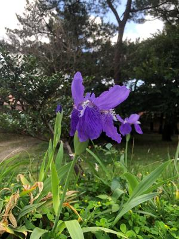
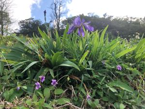

うるがいの話 ある日
最新: 丸型蛍光灯【うるがいの話 ある日】とは 一日だけのプログです
『うるがいの話』の最新一日だけのプログで、通信料が少なく経済的だ。カニの画像をクリックすると全ての日付が載る『うるがいの話』サイトを表示します
|
|
【うるがいの話】 うるがい(ｳﾙｶﾞｲ urugai)とは、『もずくがに』の名前でとても大きくなります。 |
|---|---|
|
|
【カミマヤーの話】 猫のことを方言でマヤーといいます。カミマヤー（kamimayaa）とは、神の猫のことです。 |
|
【たながぁの音楽】 たながぁ（ﾀﾅｶﾞｰ tanagaa）とは手長えびのことで、何種類かあり大きいのは車 エビぐらいになります。 |

|
【ぶながぁの話】 ぶながぁ(ﾌﾞﾅｶﾞｰ bunagaa)とは、赤い髪の毛、赤い身体、そして身長は１ｍ２０ｃｍ ぐらい、川の蟹を食べているの目撃された。場所は沖縄県国頭郡大宜味村のと ある村僕の隣近所に住んでいる爺さんから、聞いた話です。 |
|
|
【ギーマの話】 ギーマ(giima)とは、山原の里山に咲くスズランに似た、 花を付けます。実は食べられます、 気が付くと口の周りが紫になっています。 |
2023年02月14日 (火）丸型蛍光灯
15:49

午前中、薄暗いので室内灯を点け関節リウマチの本を読んでるとイキナリ灯り
が消える。スイッチを入れるが、一瞬ついてすぐ消える。スッチの電池かと新
しいのと替えるが現象変わらず。そのうち完全に点かなくなった。ネットで検
索すると「蛍光灯の寿命」とある、なるほど。早速、エディオンに電話し在庫
を確認した上で、行く。そして、お店で蛍光灯を探していると、白髪のオッサ
ンがウロウロ、そのうち同じ蛍光灯の棚に近づき、製品を探している。カシマ
シイなと思ったが、そのうち私の名前を呼んだ。ン、オオシロ？、大学の同期
の飲み会で飲んだ、５年振りか。同じく、蛍光灯を買いに来たとのこと。今は
何をしているか、特に何もしていないと答えると自分は民泊を経営している。
前の職場は、定年退職後３か月毎に更新して仕事が出来るらしく、退職した直
後の３カ月は働いたが、それ以上は働く気がしなかったので辞めたと言った。
５分ほど近況を確認したあと、同じく蛍光灯を買って、マタ飲もうと別れる。
家に戻り、蛍光灯を入れ替えると無事点灯した、ほっとする、蛍光灯の装置本
体だと今回の蛍光灯の費用、５，０７６円（エディオン会員１０％引きの値段
）で済まないので。

１５時３６分 ビットコインの総資産 ￥８、３２１（↓１５）